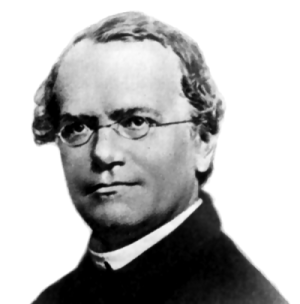

メンデルの仕事と生涯
「今に私の時代が来る」
The Work and Life of Mendel
"My time will soon come"
Author : Chiharu Nakamura
著者：中村千春
解説
メンデルが論文「植物雑種の実験」で遺伝の法則を明らかにした1866 年から 数えて今年は150 年になります。メンデルは、オーストリア帝国の小村ハイツ ェンドルフの小農の子として生まれ育ち、苦学の青年期を経て、帝国第2 の都 市ブルノの聖トーマス大修道院の修道士となりました。メンデルの才能を愛で た多くの人々、わけてもナップ大修道院長の理解と支援を得て、ひそやかに、 しかし確固とした目標と信念をもって始めた10 年に及ぶ仕事が遺伝学への扉 を開いたのでした。本書では、メンデルの仕事とその生涯を振り返って見まし た。科学は優れた個人の叡智と努力、そしてそれを支える多くの人々と時代背 景のもとに生まれるという事実を、本書を書きながら思い起こしました。読者 の皆様の何かの参考になれば嬉しく思います。
はじめに
第１章 幼少期、青年期から修道院へ
第２章 メンデル以前の遺伝に関する考え方
第３章 植物雑種の実験
第４章 実験の目的とメンデルの考察
第５章 遺伝法則の意義と発見の秘訣
第６章 遺伝法則の再発見とメンデルを巡る論争
第７章 晩年と死
おわりに
Copyright (C) 2016 Chiharu Nakamura
All Rights Reserved.
All Rights Reserved.